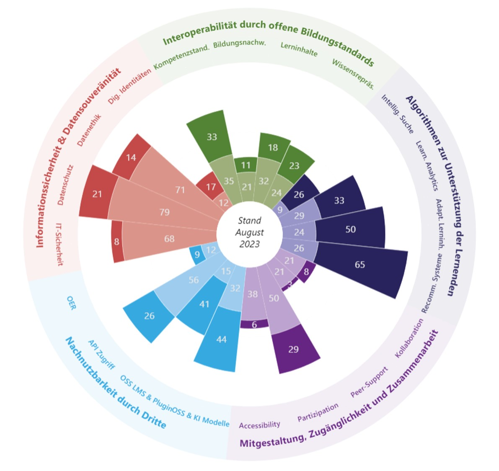
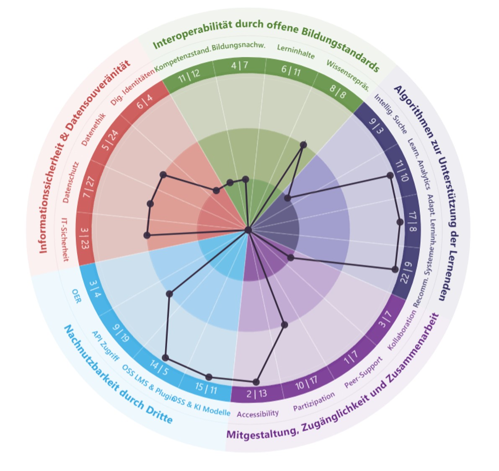
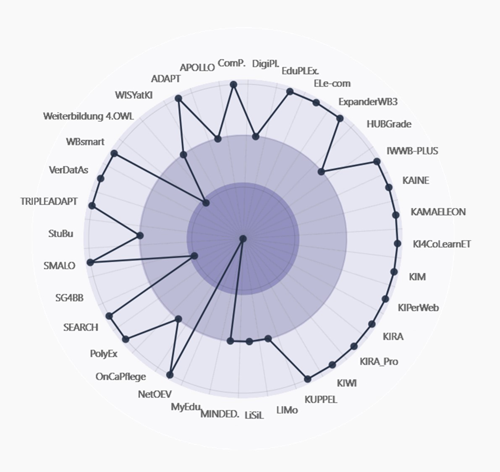

❶ Gesamtübersicht
Schwerpunkte aller INVITE Projekte auf einen Blick. Fachlich-Didaktisch & Technologisch.
Zur Ansicht wechseln...

❷ Einzelprojekte
Schwerpunkte dargestellt pro Einzelprojekt.
Fachlich-Didaktisch & Technologisch.

❸ Einzeldimensionen
Ausprägung einzelner Dimension.
Fachlich-Didaktisch & Technologisch.